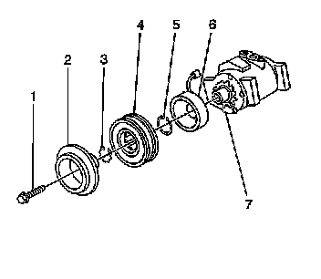
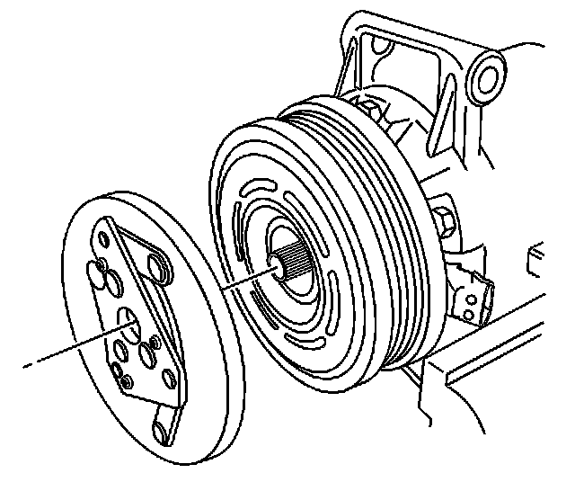
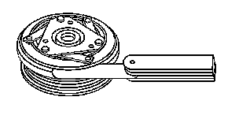

Compressor Clutch Hub: Service and Repair
COMPRESSOR CLUTCH PLATE/HUB ASSEMBLY REPLACEMENT
REMOVAL PROCEDURE

1. Raise and suitably support the vehicle. Refer to Vehicle Lifting.
2. Remove the engine protection shield.
3. Install a ratchet into the air conditioning (A/C) belt tensioner adapter opening.
4. Rotate the A/C belt tensioner clockwise in order to relieve the tension on the belt.
5. Remove the A/C belt from the A/C compressor.
6. Slowly release the tension on the A/C belt tensioner.

7. Remove the clutch plate retaining bolt (1).
8. Remove the clutch plate assembly (2).
9. Remove the clutch hub/bearing snap ring (3).
10. Remove the clutch hub/bearing assembly (4).
11. Remove the snap ring (5) from the clutch coil (6).
12. Remove the clutch coil (6) from the A/C compressor (7).
INSTALLATION PROCEDURE
1. Install the clutch coil (6) to the A/C compressor (7).
2. Install the snap ring (5) to the clutch coil (6).
3. Install the clutch hub/bearing assembly (4).
4. Install the clutch hub/bearing snap ring (3).
5. Place a small amount of oil on the thinnest air gap shim and place it inside the clutch plate.

6. Install the clutch plate assembly.
7. IMPORTANT: Ensure the drive plate does not drag against the pulley when the pulley is rotated.

Measure the air gap between the pulley and the drive plate. Adjust the shims to achieve a 0.35-0.65 mm (0.014-0.026 in) air gap.
8. NOTE: Refer to Fastener Notice.
Install the clutch plate retaining bolt.
Tighten the bolt to 18 N.m (13 lb ft).
9. Install a ratchet into the A/C belt tensioner adapter opening.
10. Rotate the A/C belt tensioner clockwise in order to relieve the tension on the belt.
11. Install the A/C belt to the A/C compressor.
12. Slowly release the tension on the A/C belt tensioner.
13. Remove the ratchet from the A/C belt tensioner.
14. Install the engine protection shield.
15. Lower the vehicle.